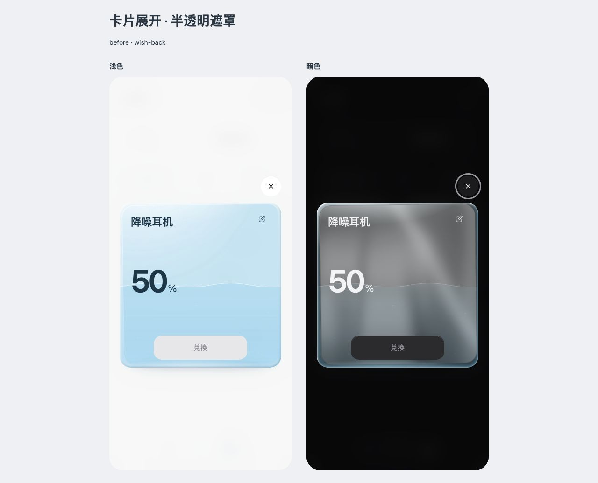
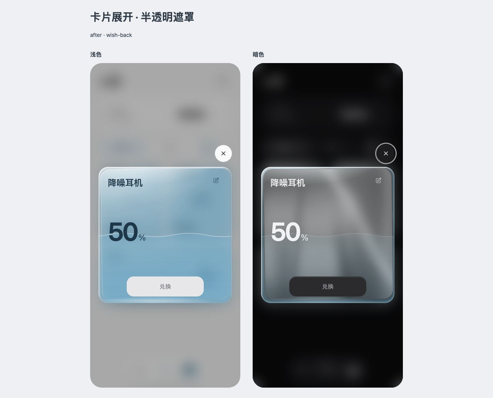
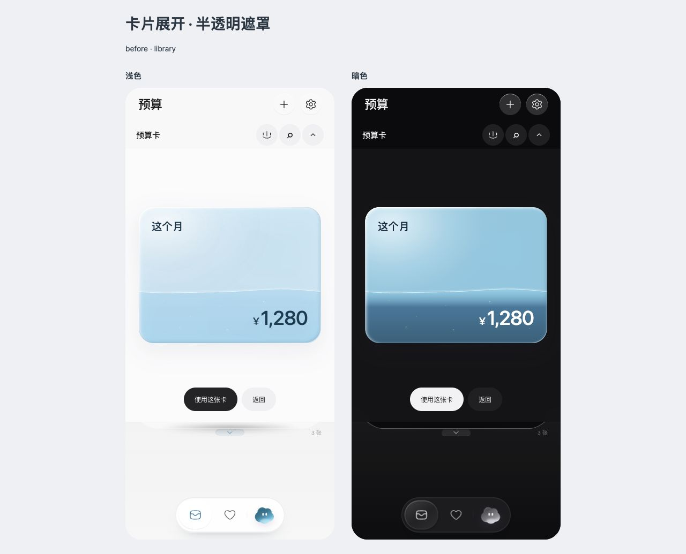
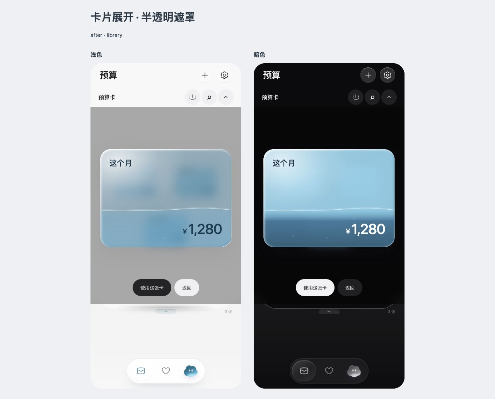
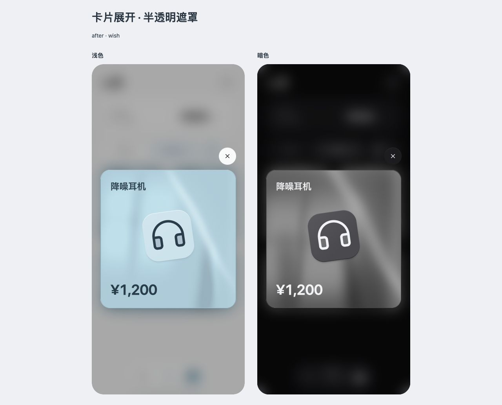
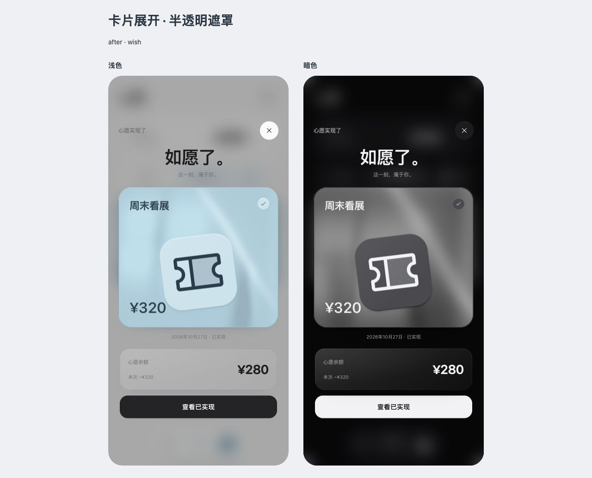

卡片展开：保留底页，而不是整页盖住
心愿大卡和卡库放大层改为半透明黑色：浅色 32%，暗色 40%。心愿保留原有 16px 模糊，卡库保留 12px；底页的位置与层次可辨认，文字不会清晰穿进浅色玻璃卡。卡片材质、配色、热区与动效代码保持。
心愿大卡


卡库球面放大


同类状态检查


实际验证：浅暗展开与关闭、Esc 返回、50% 入口置灰、100% 核对购买、完成后进入已实现清单；卡库放大与返回。9 个相关面板入口的浅暗遮罩、面板样式已核对，包括添加心愿、封面、记一笔、小朵、设置、创建预算、结算、购买确认和预算详情，未发现同类不透明遮罩。
截图与兑换回归使用禁止写回的隔离示例。未重新跑全部 21 页业务、VoiceOver、真机或系统减少动态效果。此前暂缓的 MutationObserver 空节点问题不在本次修改范围。最终遮罩深浅与背景辨识度待 Rex 验收。